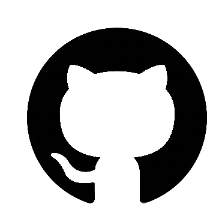

<!DOCTYPE html>
<html lang="en">
<head>
    <meta charset="UTF-8">
    <meta name="viewport" content="width=device-width, initial-scale=1.0">
    <title>Document</title>
    <link rel="stylesheet" href="FooterSection.css">
</head>
<body id="DesignFoot">
  <footer id="footer">
    <div class="waves">
      <div class="wave" id="wave1"></div>
      <div class="wave" id="wave2"></div>
      <div class="wave" id="wave3"></div>
      <div class="wave" id="wave4"></div>
    </div>
    <ul class="social-icon" id="iconssocial">
      <li class="social-icon__item"><a class="social-icon__link" href="https://github.com/MitulSonagara/truth-tunnel" target="_blank">
        
        </a></li>
      <li class="social-icon__item"><a class="social-icon__link" href="#">
        
        </a></li>
      <li class="social-icon__item"><a class="social-icon__link" href="#">
          
        </a></li>
      <li class="social-icon__item"><a class="social-icon__link" href="https://www.linkedin.com/in/mitul-songara-4b199b225/" target="_blank">
        
        </a></li>
    </ul>
    <ul class="menu" id="menu1">
      <li class="menu__item"><a class="menu__link" href="https://truth-tunnel.vercel.app/">Home</a></li>
      <li class="menu__item"><a class="menu__link" href="#">About</a></li>
      <li class="menu__item"><a class="menu__link" href="#contents">Contents</a></li>
      <li class="menu__item"><a class="menu__link" href="#contributors">Our Contributors</a></li>
      <li class="menu__item"><a class="menu__link" href="#">Contact</a></li>

    </ul>
    <p id="copyright">&copy;2024 Truth Tunnel | All Rights Reserved</p>
    <br>
    <p style="opacity: 4; font-family:'Segoe UI', Tahoma, Geneva, Verdana, sans-serif;" ><b>Made with ❤️ By Mitul Sonagara</b> </p>
  </footer>
  <script type="module" src="https://unpkg.com/ionicons@5.5.2/dist/ionicons/ionicons.esm.js"></script>
  <script nomodule src="https://unpkg.com/ionicons@5.5.2/dist/ionicons/ionicons.js"></script>
</body>
</html>